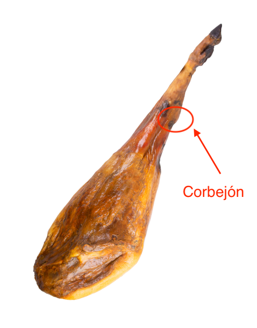
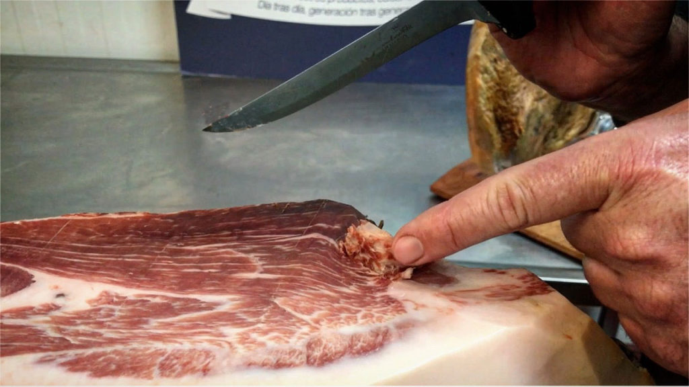
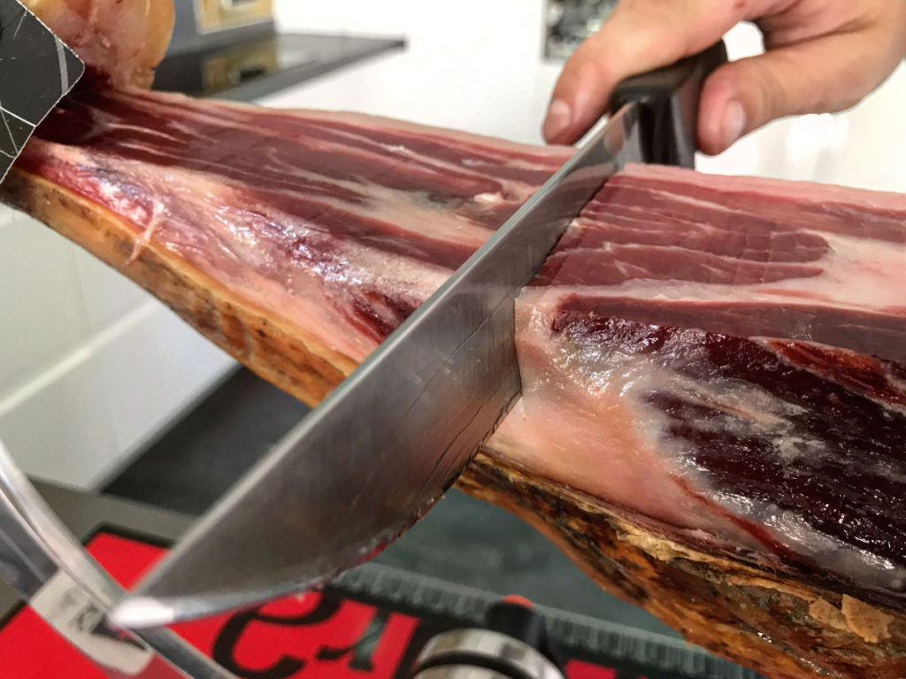
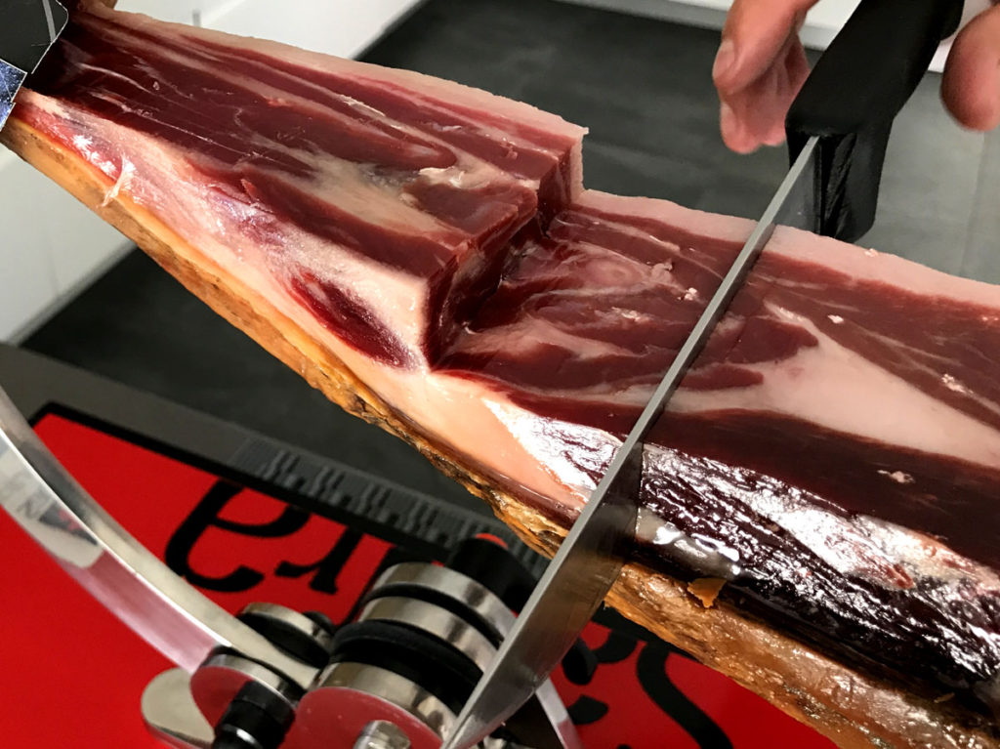
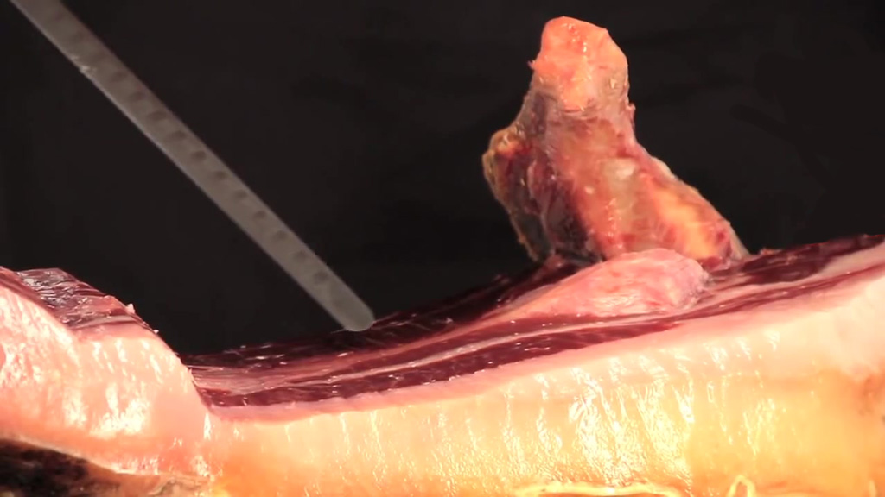

Corte de la maza
Para el corte de la maza que es la más jugosa y ancha del jamón, y es la que encontramos con la pezuña mirando hacia el cielo, haremos un corte profundo a dos dedos del corbejón que es la protuberancia que encontramos despues de la pezuña.

Limpiaremos toda la parte de grasa externa y piel hasta llegar a la zona magra. El corte de cada loncha ha de ser lo más uniforme posible, y con una anchura de 4 cm máximo para que se pueda comer de un bocado y no sea excesivamente grande. A medida que vayamos avanzando el corte de la manera más plana posible, el primer hueso que nos encontraremos sera el de la cadera. Debemos usar una puntilla para perfilar la carne y que la loncha salga limpia al llegar a esa zona.

El siguiente hueso que encontraremos será, en la parte más cercana a la pezuña, el peroné, que deberemos ejecutar un corte transversal para salvarlo y poder seguir sacando más lonchas magras. Es lo que se denomina "marcar el primer escalón"

Mas adelante, debemos hacer un segundo escalón para salbar el comienzo del hueso de la tibia y así poder seguir loncheando hasta descubir la cabeza del femur que une junto con el hueso de la cadera. En este momento es cuando iniciaremos el segundo corte.
 